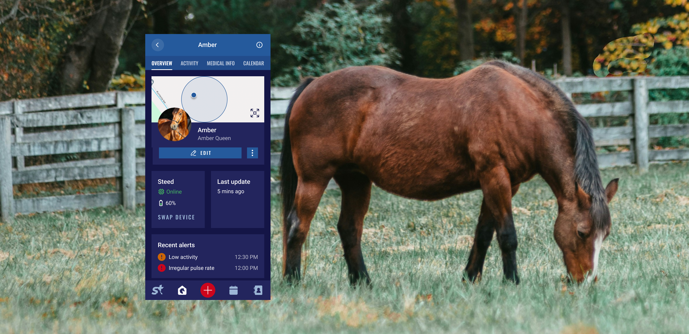
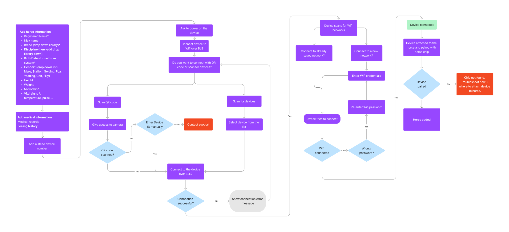
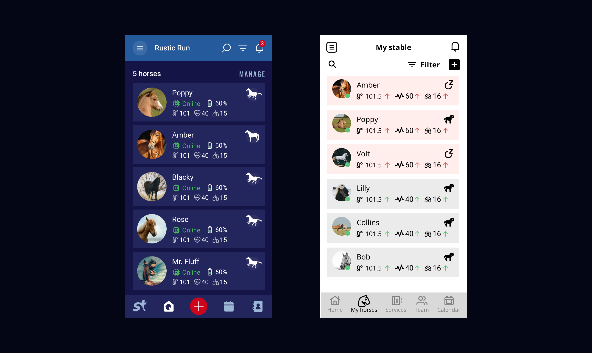
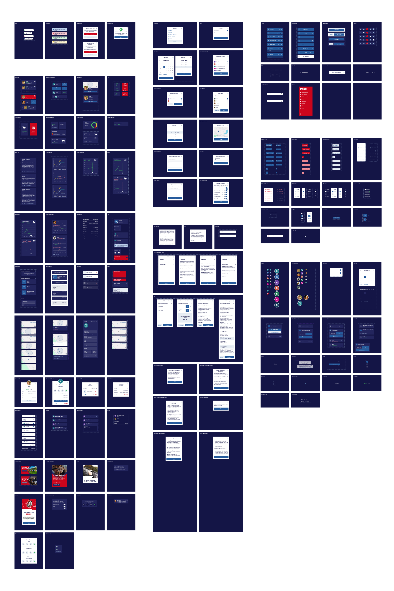
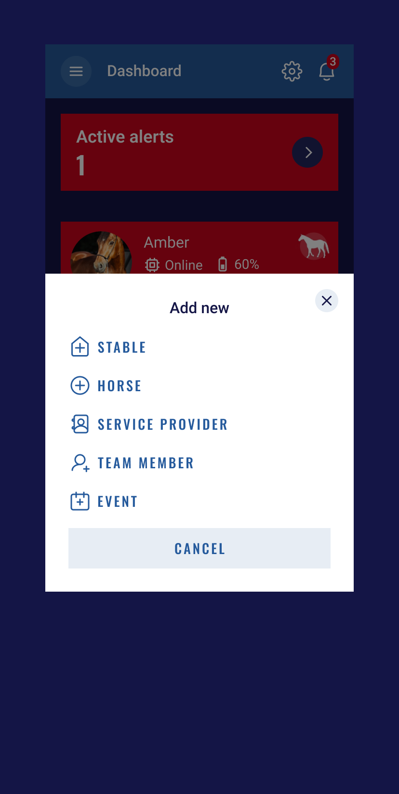
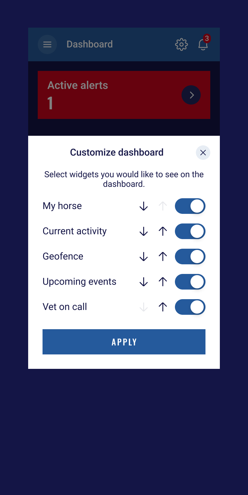
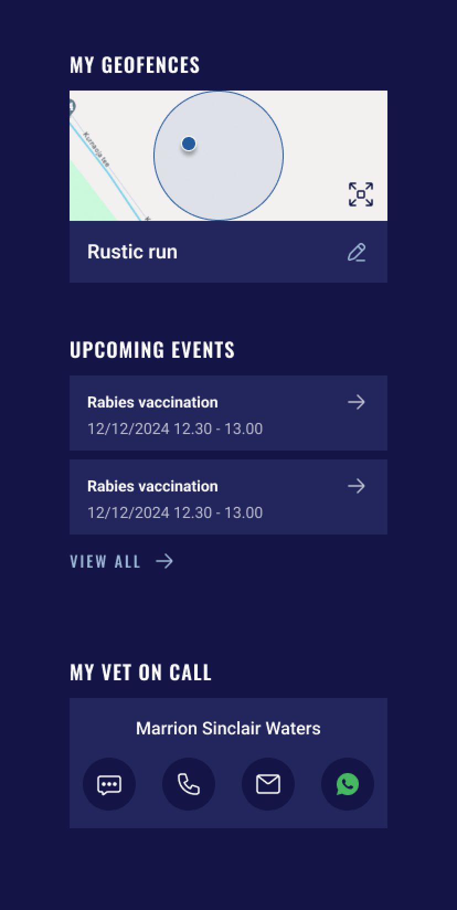
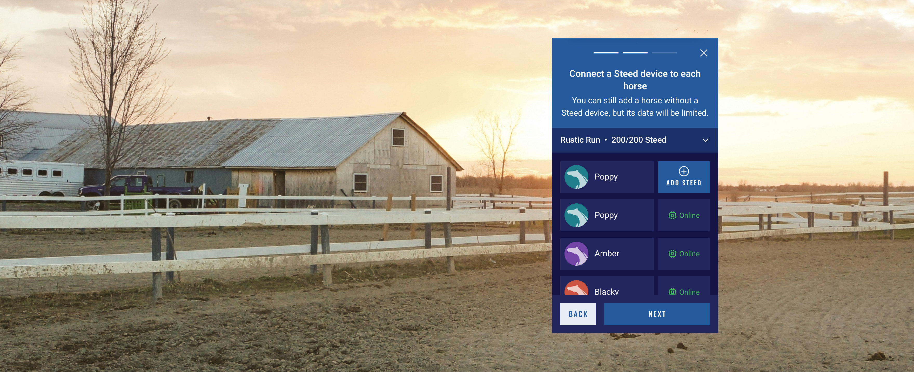
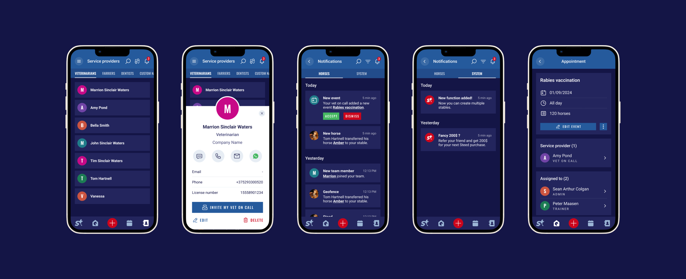

Steed
STEED provides millions of devoted horse owners, trainers and breeders, unparalleled access to critical information about the well-being of their precious horses in real time 24/7, and with it, “peace of mind and reassurance” that they have never known before.
Steed aims to enhance the well-being, health, and performance of equines by providing real-time data and actionable insights to breeders, trainers, and horse owners. The app connects to Steed - a device attached to the horse - which tracks vital signs, activity levels and emotional states, enabling users to monitor their horses’ well-being and address potential issues proactively.

Variety of needs and roles
What was special about this project was that the client had extensive knowledge of the industry, having been involved with horse breeding and equestrians throughout his life. This gave a lot of insight into users, their needs and common pain points that I could work on.
The main roles I had to design for were a horse owner, a stable manager and a vet.
A horse owner could have one or several horses and needed to quickly see how their horse was doing at the moment. For this reason, an overview of the horse and its key health data had to be accessible directly from the dashboard, without extra clicks.
For a stable manager, the focus was on being able to manage and access information about multiple horses, as well as manage other stable workers.
For a vet, the main goal was to access horses’ health data and current status, as well as create and manage appointments.
Creating user flows and wireframes
Based on the information about the roles and their needs and pain points, I created user flows and, after several revisions, translated them into wireframes.
Below you can see how I worked on the flow for adding a horse manually to the digital stable and connecting it to a Steed device.

Going into visuals
Based on the CVI created at DUX by my colleague, I translated my wireframes into the final visual design. Usually, I don’t treat wireframes as a fixed solution, but see the UI design phase as an opportunity to review UX decisions and iterate on them.
For example, on the screen below, I reviewed the placement of the buttons and decided that the Add button could become the most prominent action in the tab bar, because it provides access to the main actions, such as adding a horse, creating a stable, adding an event to the calendar or adding a team member.


Tailored dashboards
As I mentioned earlier, I had to design for three main roles: a horse owner, a stable manager and a vet. This meant that I had to design dashboards for different scenarios: a user could have one horse, several horses, manage an entire stable, or manage multiple stables as a vet. I had to define which data was most important and should be displayed in each case.
Some elements remained the same across the roles, for example, add button, dashboard customization, geofences, events and important contacts.



The main challenge was figuring out how to display the horses’ current status and highlight those that needed attention.
{{ p }}

Horse details
Horse Details gathers important information about an individual horse in one place. It shows the horse’s current location within a geofence, vital signs such as temperature, pulse and respiration, and what the horse is doing at the moment. This is the most important information for helping users understand whether a horse may be showing early signs of colic or another acute condition.
Other information is accessible through tabs because it is not tied to an immediate action.
Bulk upload
The simplest flow for manually adding a horse was described above through the wireframes. But the trickiest part was solving the use case where a user needs to add a large number of horses and adding them manually one by one is not an option.
I solved the bulk upload flow by introducing the option to upload a CSV/XLS file - a format already used by stables for their internal management and existing software.
If a user selects this option, instructions on how to prepare and upload the file are sent to their email. I also added flows that allow users to delegate the task of adding horses to other team members, which is especially useful for larger stables with many people involved in their management.
Vet
I decided to keep the main screens, such as horse details and calendar, the same as for other roles because they already met the users’ needs.
Apart from the dashboard, I changed the design of the stables list and stable cards to better suit a vet working with multiple stables. For horses list I added contact details of the main stable workers, so that a vet could contact them immediately in case of an emergency.
